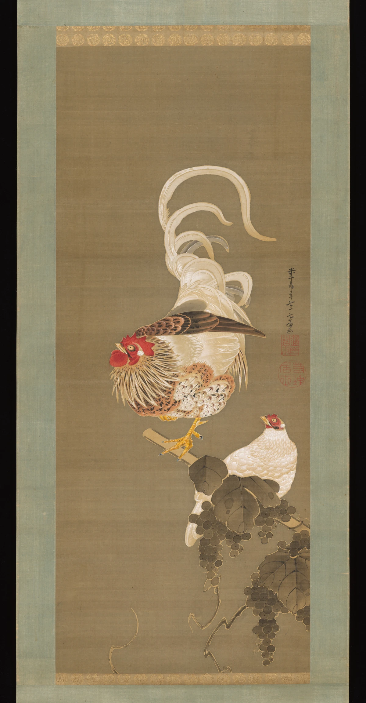
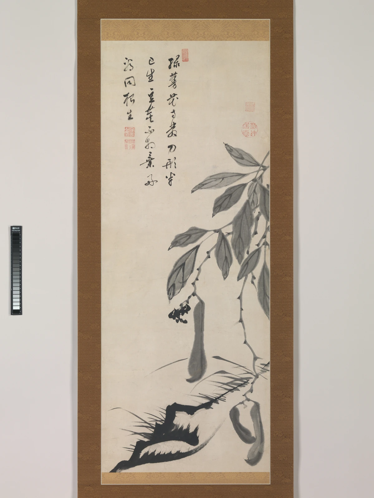

細かな羽と、大きな尾の曲線。
胴体の羽毛には小さな形が重なり、尾羽は上へ大きく曲がります。細部の密度と、離れて見える輪郭を比べてみましょう。
作品・制作の例4件を紹介しています。実作品画像2点、参照・関連画像0点。画像の収集は継続中です。
人物・画家
Itō Jakuchū
細かな観察は、そのまま現実を写すためだけに使われるとは限りません。若冲は鶏や植物を見つめながら、尾羽の曲線、色の密度、余白を組み合わせて独自の画面をつくりました。
鮮やかな絹の絵、水墨画、木版画を比べると、「鶏の画家」という一言ではおさまらない表現の幅が見えてきます。
実作品を見る

画像を表示できませんでした。下の出典ページで確認できます。
伊藤若冲 / 1792年
絵の本紙と周囲の表装を含む図です。掛軸の軸先などを含めた全体写真ではありません。
胴体の羽毛には小さな形が重なり、尾羽は上へ大きく曲がります。細部の密度と、離れて見える輪郭を比べてみましょう。
二羽の鶏と葡萄は画面の中央から右下に集まり、左側には大きな余白があります。詰まった部分と空いた部分の対比が見どころです。
伊藤若冲, Hen and Rooster with Grapevine, 1792. The Metropolitan Museum of Art, 1975.268.69. The Harry G. C. Packard Collection of Asian Art, Gift of Harry G. C. Packard, and Purchase, Fletcher, Rogers, Harris Brisbane Dick, and Louis V. Bell Funds, Joseph Pulitzer Bequest, and The Annenberg Fund Inc. Gift, 1975. Image: The Met Open Access, CC0.
出典で作品・資料を見る ↗CC0 1.0（The Met Open Access）
原作品は著作者の没年から十分な期間が経過し、Metも個別作品をPublic Domainと表示。若冲は1800年没。
Metの個別作品ページがPublic Domainと表示し、同館のOpen Access方針が対応する画像をCC0として公開しています。
Metが提供する原寸JPEGを無加工で取得しました。AI生成画像ではありません。
出典先の原画像を開く ↗画像の利用条件 ↗表示用に縦横比を保って縮小し、WebPへ変換。切り抜きや色の変更はしていません。原画像も開けます。
実作品を見る

画像を表示できませんでした。下の出典ページで確認できます。
伊藤若冲（画）／無染浄善（むせん じょうぜん）〈丹崖〉（賛） / 1750年代後半〜1764年より前
絵の本紙と周囲の表装を撮影した図です。左端の階調スケールは作品の一部ではありません。
葉や実には薄い墨が重なり、下部には黒い筆跡が走ります。同じ墨でも、面と線の違いが画面に動きを生んでいます。
上部の賛は無染浄善によるものです。植物の絵と文字、それらの間に残された空白の配置を見てみましょう。
伊藤若冲（画）／無染浄善〈丹崖〉（賛）, Bean Vine, late 1750s–before 1764. The Metropolitan Museum of Art, 1985.97. Purchase, Lita Annenberg Hazen Charitable Trust Gift, in honor of Cynthia and Leon Polsky, 1985. Image: The Met Open Access, CC0.
出典で作品・資料を見る ↗CC0 1.0（The Met Open Access）
原作品は著作者の没年から十分な期間が経過し、Metも個別作品をPublic Domainと表示。画家の若冲（1800年没）と賛者の無染浄善（1764年没）を区別しています。
Metの個別作品ページがPublic Domainと表示し、同館のOpen Access方針が対応する画像をCC0として公開しています。
Metが提供する原寸JPEGを無加工で取得しました。AI生成画像ではありません。
出典先の原画像を開く ↗画像の利用条件 ↗表示用に縦横比を保って縮小し、WebPへ変換。切り抜きや色の変更はしていません。原画像も開けます。
掛軸・絹に色で描いた絵
鶏の羽毛の細かな描写と、上方へ大きく弧を描く尾羽を見比べられます。
作品・資料の出典を見る ↗原題：Hen and Rooster with Grapevine
伊藤若冲 / 1792年 / 掛軸・絹に色で描いた絵
《動植綵絵》とは別の掛軸です。彩色の作品を読み解く具体例として紹介します。
掛軸・紙に墨で描いた絵
絵と書が一つの画面をつくります。墨の濃淡と大きな余白から、細密な彩色画とは異なる表現を見られます。
作品・資料の出典を見る ↗原題：Bean Vine
伊藤若冲（画）／無染浄善（むせん じょうぜん）〈丹崖〉（賛） / 1750年代後半〜1764年より前 / 掛軸・紙に墨で描いた絵
書の作者は若冲ではなく無染浄善です。日本語の見出しは英語題の読みやすい訳です。撮影用の階調スケールが写真左端に写っています。
絹に色で描いた絵・30幅の連作
鳥だけでなく魚や虫、植物までが描かれる、若冲を代表する連作です。色彩と観察、画面の大胆な組み立てをまとめて考えられます。
作品・資料の出典を見る ↗原題：動植綵絵
伊藤若冲 / 18世紀、約10年にわたる制作（構成作品は1757〜1758年頃から1766年頃） / 絹に色で描いた絵・30幅の連作
30幅の絵に寄進状と一行書が付属します。付属資料を絵の点数に加えません。原作品の保護期間と写真の利用条件は別で、ここでは画像転載を行いません。
紙に刷った木版画・巻物
淀川を下った旅を、詩と景色の連なりにした木版画です。黒い面と白い線を使う、彩色画とは別の工夫を示します。
作品・資料の出典を見る ↗原題：Pleasant Diversions on a Riverboat Journey
伊藤若冲（画）／大典顕常（だいてん けんじょう、詩） / 1767年頃 / 紙に刷った木版画・巻物
所蔵品番号1975.268.70はMet所蔵の一本です。千葉市美術館2925015とは別の所蔵本で、寸法を混ぜません。画像は今回未取得です。
京都の野菜を売る商家に生まれた若冲は、40歳で家の商売を弟へ譲り、絵を描く仕事に専念しました。狩野派（かのうは）の絵を学び、中国の絵を写して描き、身近な生きものも観察しました。こうした学びを重ね、自分の画面を築いていきます。
《葡萄双鶏図》では、羽の細かな模様と尾の大きな曲線が同居しています。どれだけ本物らしいかだけでなく、形をどこに集め、どこを空けているかにも目を向けると、画面の組み立てが見えてきます。
《豆のつる》では、薄い葉や実と、下方の濃い筆跡が対照をつくっています。上部の賛（さん：絵に添える詩や文章）を書いたのは僧の無染浄善（むせん じょうぜん）です。画家と賛者を分けて知ると、一つの掛軸に複数の人の仕事があることもわかります。
《動植綵絵》は30幅からなる連作で、若冲自身が相国寺（しょうこくじ）へ贈りました。《釈迦三尊像（しゃかさんぞんぞう）》とともに儀式で用いられており、鮮やかな装飾としてだけでなく、信仰の場に置かれた作品でもあります。
《乗興舟》は、大典顕常（だいてん けんじょう）と淀川を下った旅に基づく木版画です。黒い地に白い線を現す方法は、石に刻んだ文字や絵の拓本を思わせます。絵巻の横長の連なりと、掛軸の縦長の構成を比べてみましょう。
若冲の作品は、2012年のワシントン、2016年の東京、2018年のパリなどで《動植綵絵》全30幅を紹介する展覧会を通して、改めて広く見られてきました。これは作品の再評価と受容の歴史です。
2017年のボストン美術館の村上隆展では、若冲の《松に白鸚鵡図》を村上の作品と並べ、平面と立体の見え方を行き来する表現が比較されました。こうした具体的な比較を手がかりに現代との接点を考えます。似ていることだけで、直接の師弟関係や一つの流派を想定しません。
Met所蔵《豆のつる》の制作時期。絵は若冲、賛は無染浄善です。年代には幅があります。
《動植綵絵》の構成作品が制作されたおよその期間。30幅の連作で、一年にまとめて描いた作品ではありません。
《乗興舟》を制作。淀川を下った旅を、詩と景色が続く木版画に表す。ここで紹介するMet所蔵本と、千葉市美術館の所蔵本は別の一本です。
《葡萄双鶏図》を制作。鶏と葡萄を描いた掛軸で、《動植綵絵》の一幅ではありません。
京都の野菜を売る商家に生まれた若冲は、40歳で家の商売を弟へ譲り、絵を描く仕事に専念しました。狩野派（かのうは）の絵を学び、中国の絵を写して描き、身近な生きものも観察しました。こうした学びを重ね、自分の画面を築いていきます。
《葡萄双鶏図》の赤いとさかと白い尾羽、《豆のつる》の墨の濃淡を見比べます。
《豆のつる》の上部の書は、画家とは別の無染浄善（むせん じょうぜん）が書きました。絵と文字の間の空白も見てみましょう。
縦長の掛軸（かけじく）と、横長に連なる巻物では、目の動かし方が違います。絹、紙、墨、木版という材料や方法の違いも確かめます。
細かな羽毛と大きな尾羽の輪郭、濃い墨と何も描かない空間。密な部分と空いた部分が、画面全体の釣り合いをつくります。
琳派とは別の人物項目です。装飾性や余白は比較できますが、似ていることだけで同じ流派に分類しません。後世との関係は、展覧会など具体的な資料に基づいて紹介します。
若冲の作品は、2012年のワシントン、2016年の東京、2018年のパリなどで《動植綵絵》全30幅を紹介する展覧会を通して、改めて広く見られてきました。これは作品の再評価と受容の歴史です。
2017年のボストン美術館の村上隆展では、若冲の《松に白鸚鵡図》を村上の作品と並べ、平面と立体の見え方を行き来する表現が比較されました。こうした具体的な比較を手がかりに現代との接点を考えます。似ていることだけで、直接の師弟関係や一つの流派を想定しません。
名前を開くと、生没年、主な仕事、作品と出典を読めます。生涯と作品を調べるための資料をまとめています。
伊藤若冲
江戸時代の京都で活躍した画家。野菜を売る商家に生まれ、家の商売を弟へ譲った後に、絵を描く仕事に専念しました。中国絵画の学習や実物の観察をもとに、鮮やかな花鳥画と大胆な水墨画の両方で独自の表現を築きました。
江戸時代の京都絵画の中で、若冲自身の作品と表現を扱います。琳派の画家として分類しません。
《動植綵絵》とは別の掛軸です。彩色の作品を読み解く具体例として紹介します。
書の作者は若冲ではなく無染浄善です。日本語の見出しは英語題の読みやすい訳です。撮影用の階調スケールが写真左端に写っています。
30幅の絵に寄進状と一行書が付属します。付属資料を絵の点数に加えません。原作品の保護期間と写真の利用条件は別で、ここでは画像転載を行いません。
所蔵品番号1975.268.70はMet所蔵の一本です。千葉市美術館2925015とは別の所蔵本で、寸法を混ぜません。画像は今回未取得です。
人物の出典：九州国立博物館 ↗ / 国立国会図書館 ↗ / メトロポリタン美術館 ↗ / メトロポリタン美術館 ↗ / 皇居三の丸尚蔵館 ↗ / メトロポリタン美術館 ↗ / 千葉市美術館 ↗ / ボストン美術館 ↗ / メトロポリタン美術館 ↗
彩色の掛軸と水墨画の実画像2点、連作と木版を含む4つの作品例から若冲を紹介します。30幅の《動植綵絵》は一つの連作として扱い、掲載写真と取り違えません。琳派の所属作家としては分類しません。
作品・制作の例4件を紹介しています。実作品画像2点、参照・関連画像0点。画像の収集は継続中です。